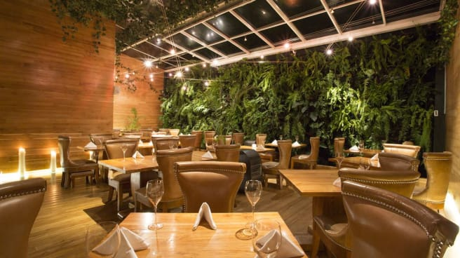

        <!-- Your main view, should have "view-main" class -->
        <div class="view view-main">
            <!-- Initial Page, "data-name" contains page name -->
            <div data-name="disfruta" class="page">

                <!-- Top Navbar -->
                <div class="navbar">
                    <div class="navbar-bg"></div>
                    <div class="navbar-inner barra-sup">
                        <div class="left">
                            <a href="" class="panel-open"> <i class="fas fa-bars"></i>
                            </a>
                        </div>
                        <div class="title"></div>
                    </div>
                </div>

                <!-- Bottom Toolbar -->
                <div class="toolbar toolbar-bottom">
                    <div class="toolbar-inner barra-down">
                        <!-- Toolbar links -->
                        <a href="#" class="bo">
                            </a>
                        <a href="/home/" class="home"><i class="fas fa-home icono"></i></a>
                        <a href="/mapa/" class="mapa"><i class="fas fa-map-marked-alt icono"></i></a>
                    </div>
                </div>

                <!-- Scrollable page content -->
                <div class="page-content">
                    <div class="block">
                       
                        <div class="texto1-rest">
                            <h2 class="titulo-principal">Disfruta de la mejor comida de la capital</h2>
                            <p class="parra-principal">La capital de Colombia tambien es un epicentro gastronomico bastante interesante. Aqui convergen platos de distintos paises del mundo, los mejores chefs y restaurante del pais y del continente, ofertando un sin numero de opciones para los ciudadanos.<br> <br>
                            A continuación, en enseñamos cuales son los mejores restaurantes de Bogotá que no podemos olvidar y que no te puedes perder si vienes de visita.
                            </p>
                        </div>

                    </div>

                </div>
            </div>
        </div>
